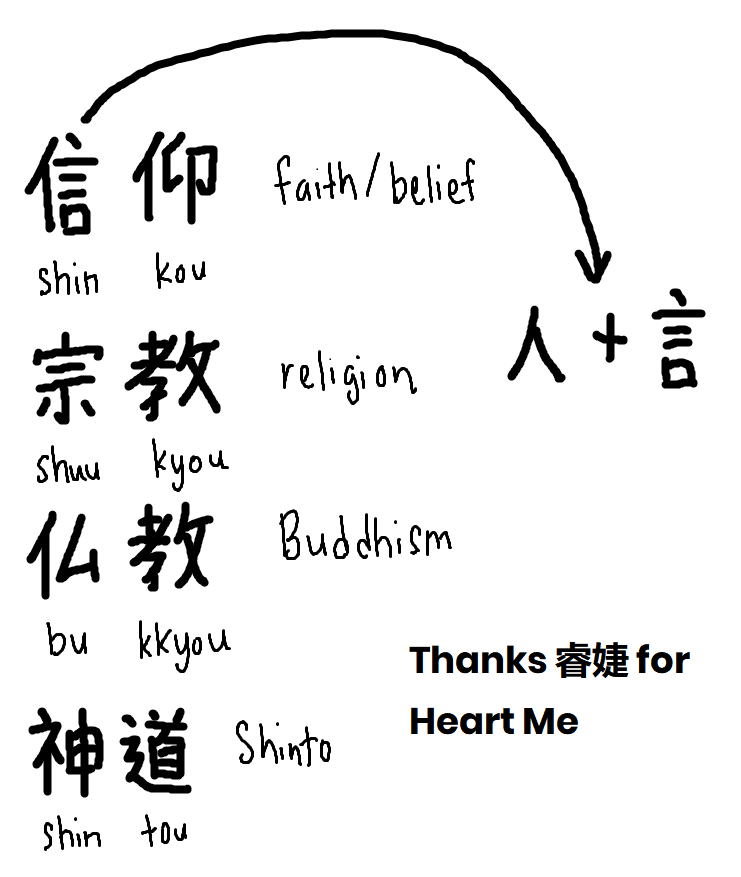
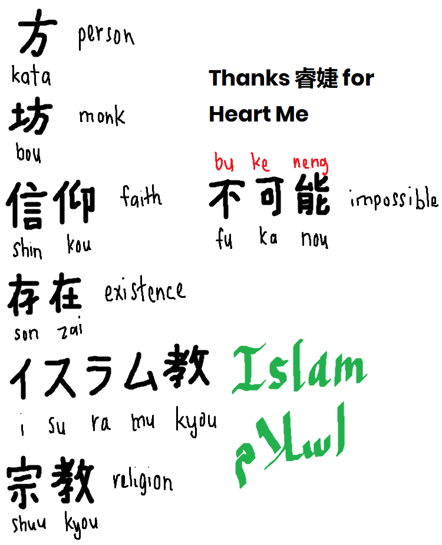

The Way of Life
1st October 2024
Assalamualaikum and peace be upon you!
Tuesday. Finished Duolingo Japanese Kanji Section 4, Unit 8: Discuss religion
No wonder the title is "The Way of Life". Based on the Arabic word for religion:
الدين
which "the way of life" suits more than the word "religion" (from Latin "religiō" meaning piety/superstition/conscientinousness), at least the modern sense of religion.
So let's dive into the kanji that we have learned since 28th September 2024 (took us 4 nights to finish this!)
LOL with all the random notes that I jot throughout the live. It's usually when I was explaining things to the chat. I was introducing Arabic to a viewer (Japanese kid) who is interested in learning Arabic:
- the abjads; ابتث
- separate abjads and connected abjads
- the unnecessary lines (can be important for those who don't speak Arabic but want to read the Quran)
- addition to the lines like shadda, sukun, tanwin etc.
- introducing a book called "iqra" (read) to learn the abjads
- basic phrases like "assalamualaikum", "waalaikumussalam"

So today's characters are:
- 神 (kami) = god/divine
- 寺 (tera) = temple
P/S: Compared with the character 時 (toki) as 寺 is a radical that makes it up besides 日 (hi = day)
- 祈る (inoru) = to pray
- 信仰 (shinkou) = faith
- 宗教 (shuukyou) = religion
Let's go to the next day (29th September 2024):
I guess it's just repetition from the previous day with more elaboration:
- 信 that is made up of the radical 人 (hito = person) + 言 (iu = say/speak/speech)
- 仏教 (bukkyou) = Buddhism
- 神道 (shintou) = Shinto
Let's move on to the next day (30th September 2024):
Wake me up when September ends 😁
- 葬式 (soushiki) = funeral
- 存在 (sonzai) = existence
- 魂 (tamashii) = spirit
- 坊 (bou) = monk
- 滅 (metsu) = mortal
Wow! Suddenly everything turns gloomy and morbid 👻
I guess we will do a funeral for our Japanese proficiency existence if we don't have the spirit, you mere mortal!😂
Let's jump into today (1st October 2024):

- Comparing 方 (kata = person) with the previously learned 坊 (bou = monk) where "kata" is inside it!
- イスラム教 (isuramukyou) = Islam
- 不可能 (fukanou) = impossible
P/S: which is comparable to Chinese bukeneng (not able to)
I think that's it for this entry. またね~ 👋